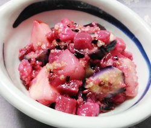

ビーツと梨の真っ赤なマリネ
- 調理時間：20分
- （一人当たり）
- カロリー：425kcal
- たんぱく質：3.1g
- 脂質：30.8g
- 炭水化物：34.7g
- 塩分：1.3g


＜2人分＞
- ビーツ
- 200g
- りんご
- 1/2個
- 梨
- 1/2個
- ナス
- 1本
- 雑穀ミックス（調理済）
- 大さじ２
- ・オリーブオイル
- 60ml
- ・酢
- 30ml
- ・塩
- 小さじ1/2
- ・コショウ
- 少々
A


- ビーツは厚めに皮を剥いて食べやすい大きさの角切りにする。
鍋にビーツをいれて、ひたひたの水と塩を加えて火にかけ、中まで柔らかくなれば火を止め、ザルにあげて水気をきっておく。 - ナスは乱切りにして、水にさらした後、電子レンジにかける。
- りんご、梨は皮を剥き、ビーツと同じくらいの大きさに切る。
- ①～④と雑穀ミックスをボウルに合わせ、Aのドレッシングで和える。
ビーツと梨の真っ赤なマリネ
ロシア料理のボルシチに入っている真っ赤な野菜「ビーツ」は、“食べる輸血”と言われるほど、様々な栄養素が含まれます。
まず、特徴的な赤い色の成分は、赤紫色を発色する「ベタシアニン」、黄色を発色する「ベタキサンチン」。この2つの色素は総称して「ベタライン色素」と呼ばれており、高い抗酸化作用があります。抗酸化作用は、活性酸素を除去する働きがあるため、アンチエイジングなどが期待できます。
見た目に驚いてしまいますがヒユ科フダンソウ属の根菜で、てんさい糖の原料となるテンサイ（甜菜）の仲間なので、ほんのり甘くクセもありません。話題のスーパーフードなのです。